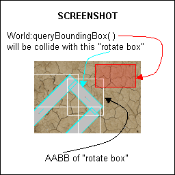

| Available since LÖVE 0.8.0 |
| This method is not supported in earlier versions. |
Calls a function for each fixture inside the specified area by searching for any overlapping bounding box (Fixture:getBoundingBox).

World:queryBoundingBox( topLeftX, topLeftY, bottomRightX, bottomRightY, callback )
number topLeftXnumber topLeftYnumber bottomRightXnumber bottomRightYfunction callbackNothing.